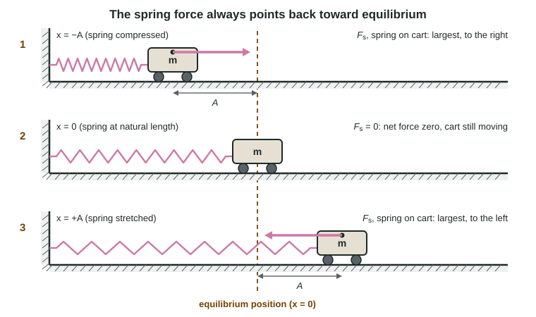

Pull a mass on a spring to one side and let go. It slides back, shoots past the middle, slows, stops, and comes back. Without friction it would do this forever, taking the same time for each trip. This page builds the model behind that motion from one idea: a force that always points back to the middle and grows the farther you go.
Periodic motion and equilibrium
Motion that repeats itself in equal time intervals is periodic motion. A swing, a vibrating ruler and a cart bouncing between two springs are all periodic. Each one moves back and forth about a middle position.
That middle position is the equilibrium position: the place where the net force on the object is zero. If you set the object down there at rest, it would stay. For a cart on a horizontal spring, it is where the spring is relaxed. For a block hanging from a vertical spring, it is lower than that: where the spring has stretched just enough to hold up the block's weight.
Displace the object from equilibrium and a force appears that pulls it back. That force is a restoring force. It always points toward equilibrium, whichever side the object is on.
The rule that makes motion "simple harmonic"
A spring gives the cleanest restoring force. You met Hooke's law in Unit 2: a spring stretched or compressed by x exerts a force of size kx. Put the cart's position x = 0 at equilibrium, and the spring force on the cart is
F = −kx
The minus sign carries the whole story. When x is positive (cart to the right), the force is negative (to the left). When x is negative, the force is to the right. And the size of the force is proportional to the displacement: twice as far, twice the force.
Simple harmonic motion (SHM) is the motion produced by exactly this kind of force: a restoring force proportional to the displacement from equilibrium and opposite to it. Any system with that force law moves in SHM, whether or not it contains a spring.

Following one cycle
Use the figure and walk through one cycle, step by step. Each step causes the next.
- The cart is held at x = −A, the spring compressed, and released. The spring pushes it right with its largest force, kA, so its acceleration is largest here, even though its velocity is zero.
- As the cart moves toward x = 0, the displacement shrinks, so the force shrinks. The cart keeps speeding up, but more and more gently.
- At x = 0 the force is zero. The cart is moving at its greatest speed. Zero net force means zero acceleration, not zero velocity, so it carries on past the middle.
- Past x = 0 the spring is stretched and pulls left. The cart slows down, more strongly the farther it goes.
- At x = +A it stops for an instant. The force is again largest, now to the left, and the cart heads back.
The largest displacement, A, is the amplitude. Without friction the cart reaches the same distance A on both sides, every time. Notice the pattern that students most often get backwards: force and acceleration are largest where the speed is zero (the ends) and zero where the speed is largest (the middle).
Worked example. A 0.25 kg cart on a spring with k = 20. N/m is pulled to x = +0.050 m and released on a frictionless track. Find its acceleration at release.
Principle: Newton's second law with the spring as the only horizontal force. F = −kx.
F = −(20. N/m)(0.050 m) = −1.0 N
a = F/m = −1.0 N / 0.25 kg = −4.0 m/s², toward equilibrium.
At x = 0 the same cart has a = 0; at x = +0.025 m it has −2.0 m/s², half as much, because the force is proportional to x.
Reading SHM from data
How can you tell from measurements whether a system will move in SHM? Measure the restoring force at several displacements. If a graph of force against displacement is a straight line through the origin with a negative slope, the force has the form F = −kx, and the slope is −k. If the line curves, the motion is still periodic but not simple harmonic.
| Motion | Periodic? | Simple harmonic? | Why |
|---|---|---|---|
| Cart on a spring, no friction | Yes | Yes | F = −kx exactly |
| Pendulum swinging through 5° | Yes | Very nearly | Restoring force ≈ mgθ, proportional to θ |
| Pendulum swinging through 70° | Yes | No (not closely) | mg sin θ grows more slowly than θ |
| Ball bouncing on a floor | Yes | No | In the air the only force is the constant weight |
The simple pendulum
A simple pendulum is a small, heavy bob on a light string of length ℓ. Its equilibrium position is straight below the pivot. When the string makes an angle θ with the vertical, the string pulls along the string, and gravity has a part of size mg sin θ along the bob's path, pointing back toward the bottom. That part is the restoring force.
For small angles, measured in radians, sin θ is almost exactly θ (at 10°, θ = 0.1745 rad and sin θ = 0.1736). The bob's displacement along the arc is s = ℓθ. So the restoring force is about mgθ = (mg/ℓ)s: proportional to the displacement and opposite to it. That is the SHM force law, with mg/ℓ playing the role of k. In terms of rotation, the restoring torque about the pivot is about mgℓθ, proportional to the angle.
At large angles the approximation fails. The pendulum still swings back and forth, but the motion is no longer a close match to SHM.